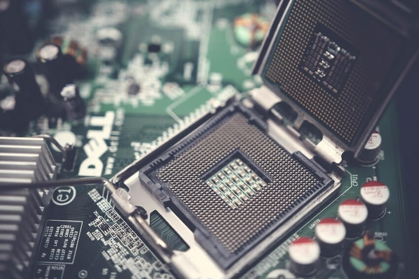

Základní deska
Co je základní deska?
Základní deska patří mezi klíčové prvky každé počítačové sestavy. Funguje totiž jako mozek, přes který proudí informace do jednotlivých komponentů v podobě procesoru, operační paměti RAM nebo grafické karty. Také je klíčem pro možné budoucí rozšíření funkcí nebo připojení dalšího příslušenství. K čemu přesně základní deska slouží, jaké má nejčastější konektory a na co je dobré dát pozor při jejím výběru?
K čemu slouží základní deska?
K čemu slouží základní deska? Hlavní funkcí základní desky je propojit jednotlivé komponenty do fungujícího celku a poskytnout jim stabilní elektrické napájení. To se na první pohled může zdát jako jednoduchá záležitost, ale opak je pravdou. Vybrat kvalitní základní desku tak, aby obsloužila vás vysněný počítač, není žádná legrace. I ta nejobyčejnější základní deska, kterou však pro svůj vysněný herní počítač fakt nechcete, se skládá z mnoha důležitých součástí. Mezi ně řadíme například formát základní desky, typ procesorové patice, čipovou sadu nebo interní a externí konektory. Samozřejmě nesmíme zapomenout ani na celou řadu tlačítek, pinů nebo na typickou knoflíkovou baterii. Základní deska na sebe v posledních letech přebrala mnoho funkcí, pro které bylo dříve nutné použít rozšiřující kartu. Například jde o zvukovou kartu, bez níž si používání počítače již nedovedeme představit. Dřívější formát poměrně rozměrné karty nahradil malý čip na základní desce. Stejně tak je raritní záležitostí vidět v počítači typickou síťovou kartu. Dnes je opět nahrazena čipem a moderní desky nabízí často i dva porty s gigabitovu rychlostí. V podstatě jedinou přídavnou kartou, kterou dnes v počítači naleznete, je grafická karta. Samozřejmě u kancelářských PC si zcela vystačíte s integrovanou grafikou přímo v procesoru, ale všude jinde se setkáte s grafickou kartou s čipem NVIDA nebo AMD.
Popis základní desky
Když už přesně víme, k čemu základní deska slouží, tak se na ni podívejme hezky z blízka. Pro popis
základní desky jsme si vybrali moderní ASUS ROG STRIX B450-F GAMING, na které je dobře vidět, že kromě
funkční stránky se výrobci soustředí i na design. Ten je v určitých případech rozhodující, protože
funkčně jsou některé varianty na zhruba 80 až 90 % stejné, a kupující se ve výsledku rozhodne podle
toho, jak se mu deska líbí. Na první pohled je hlavní součástí základní desky patice určená k osazení
procesoru. Vždy se nachází uprostřed horní části desky a v její těsné blízkosti jsou umístěny sloty pro
paměťové moduly. Ty jsou většinou k dispozici hned čtyři. U fyzicky menších desek pak jen dva, což vás
může limitovat při pozdějším upgradu. Pokud zůstaneme v horní části desky, povšimněme si poměrně
masivního chlazení napájecích obvodů kolem patice CPU. Nesmíme opomenout ani předinstalovaný I/O kryt,
na nějž jsou vyvedeny konektory potřebné pro připojení periferních zařízení. Pokud máte možnost, novou
desku si vybírejte vždy s předinstalovaným I/O krytem. Je výrazně kvalitnější a odolnější než
prehistorické řešení v podobě ručně vkládaného tenkého plíšku.
 Spodní části základní desky dominují podlouhlé sloty pro přídavné karty. Zejména se jedná o sloty PCIe
×16 určené pro grafické karty. V případě ASUS ROG STRIX B450-F GAMING jsou na desce rovnou dva a poměrně
daleko od sebe. To je důležité, protože výkonné grafické karty zabírají klidně i 2,5 slotu a musí být
ještě i dostatek místa pro nasávání chlazení. Nicméně mezi sloty se nachází různé čipy nutné pro
fungování integrované zvukové nebo síťové karty. Z druhé strany spodní části se nachází notoricky známé
SATA konektory pro SATA disky nebo Blu-ray a DVD mechaniku. Hned nad nimi je 24pinový konektor pro
připojení kabeláže z napájecího zdroje. Také si povšimněte moderních slotů M.2 pro umístění systémových
disků. Ty mají speciální provedení a vypadají podobně jako paměťové moduly. Úplně na spodní hraně je
dostatek místa pro vyvedení různých pinů, ty slouží například pro připojení RGB osvětlení, předních USB
konektorů nebo tlačítek pro zapínání či restartování PC.
Spodní části základní desky dominují podlouhlé sloty pro přídavné karty. Zejména se jedná o sloty PCIe
×16 určené pro grafické karty. V případě ASUS ROG STRIX B450-F GAMING jsou na desce rovnou dva a poměrně
daleko od sebe. To je důležité, protože výkonné grafické karty zabírají klidně i 2,5 slotu a musí být
ještě i dostatek místa pro nasávání chlazení. Nicméně mezi sloty se nachází různé čipy nutné pro
fungování integrované zvukové nebo síťové karty. Z druhé strany spodní části se nachází notoricky známé
SATA konektory pro SATA disky nebo Blu-ray a DVD mechaniku. Hned nad nimi je 24pinový konektor pro
připojení kabeláže z napájecího zdroje. Také si povšimněte moderních slotů M.2 pro umístění systémových
disků. Ty mají speciální provedení a vypadají podobně jako paměťové moduly. Úplně na spodní hraně je
dostatek místa pro vyvedení různých pinů, ty slouží například pro připojení RGB osvětlení, předních USB
konektorů nebo tlačítek pro zapínání či restartování PC.
Formát základní desky
K prvotnímu rozdělení základních desek slouží jejich fyzická velikost. Ta je dána obecně uznávanými standardy, které známe pod označením mITX, mATX, ATX a eATX.

Platforma a patice základní desky
V dnešní době máte na výběr mezi platformou AMD nebo Intel. Dříve platilo, že AMD bylo řešením pro chudší peněženku, kde nevadil celkově nižší herní výkon procesoru. S nástupem procesorů AMD Ryzen, nebo dokonce AMD Threadripper však došlo k obrovské změně. Významný nárůst počtu jader zaskočil Intel, ten ale stále setrvává na vyšších cenovkách, které však mají své opodstatnění v maximální kompatibilitě a stabilitě nejnovějších čipových sad.  V této části ještě AMD trochu pokulhává a stále se může stát, že i ta nejnovější deska bude mít problémy se stabilitou při použití jinak perfektních operačních pamětí. Pokud už máte vybranou platformu, ke slovu se dostává výběr procesorové patice, jinak řečeno socketu. U AMD je k dispozici AM4 pro procesory Ryzen, případně TR4 pro 32jádrové procesory Threadripper. U Intelu je situace obdobná a patice LGA 1151 je určena pro procesory Intel Coffee Lake, kdežto LGA2066 pak podporuje profesionální a poměrně drahé Skylake-X a Kaby Lake-X.
BIOS
Výraz BIOS je odvozen z počátečních písmen slov Bios Input Output System a jedná se o speciální software nahraný do speciálního paměťového čipu základní desky. Najdete ho na každém PC označeném jako IBM kompatibilní. Možná to pro vás bude překvapení, ale například na Macbooku Air od společnosti Apple BIOS zkrátka není. Typický uživatel začne přítomnost BIOSu řešit až ve chvíli, kdy ho potřebuje aktualizovat na nejnovější verzi. To je nutné například před výměnou za novější procesor. Možná si řada z vás vybaví BIOS jako nudné prostředí s modrým pozadím a spoustou podivných nápisů. Moderní doba a koneckonců i hardware si však žádá něco jiného, a proto byl BIOS nahrazen UEFI (Unified Extensible Firmware Interface). Toto moderní rozhraní má celou řadu výhod a pro uživatele často nabízí vkusné, plně grafické prostředí s celou řadou možností. Například máte plně pod kontrolou přetaktování procesoru, kontrolu ventilátorů nebo teploty klíčových komponentů. Podívete se na komentované video ke zvýšení výkonu počítače pomocí přetaktování. K tomu se mimo jiné používají i různá nastavení přímo v BIOSu základní desky.